On the geometry of isometric growth
Nature provides remarkable examples of shapes that grow incrementally while preserving their proportions, growing isometrically. As we saw in the the previous chapter this in an exception to the normal process of growth. These special objects have have in a real senses adopted an optimal form and developed a way to grow that retains that it. These shapes are governed by one of the oldest ideas in geometry: the gnomon.
Before we define the gnomon precisely, let's look some examples that might come up on a walk in nature. We will observe some geometric patterns that foreshadow the mathematics that follows.
When hiking above the the tree line in the pacific coast range, the cascades or rocky mountains, you may be fortunate to spot flecks of white moving along distant peaks signaling the presence of rocky mountain goats (Oreamnos americanus). These amazing creatures, which are more closely related to antelopes than true goats, live among the rocky crags, bounding along steep slopes and boulders as if gravity had no meaning. It is difficult to get a close up look at these animals; they climb where it is hard for us reach, and they tend to move away if we get close. And, you are ill-advised to get too close. Mountain goats are very protective of their young, and they have sharp horns to contend with. The horns are what draws our attention here.
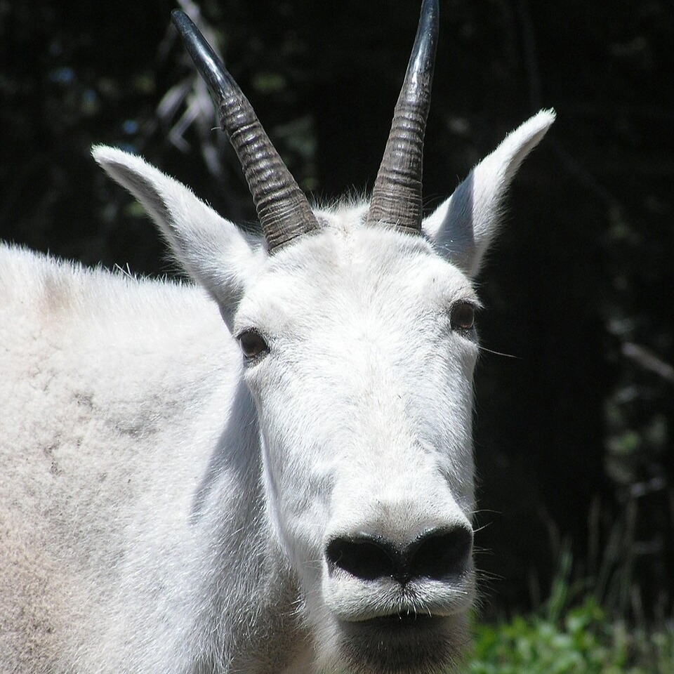
Unlike elk and deer, mountain goats don't shed their horns each year only to regrow them the next. Instead they grow continuously, year after year. A new frustum-shaped collar of keratin is added at the base each year, pushing the older material upward. At each year's end the horn is a similar conical shape to the horn at every previous year — just longer and wider. Each new year of growth, creates a ring, with forms a record of the animal's age. This shape preserving addition, is known as a gnomon, in geometric terms.
Synchrotron micro X-ray fluorescence (SR-μXRF) can map trace-element concentrations across a horn cross-section at 20-μm resolution, resolving individual annual rings. Lead introduced into the bloodstream appears as a discrete enriched band at the ring corresponding to the year of exposure. Calcium, copper, zinc, bromine and sulfur show their own annual banding patterns tied to the biology of keratinisation. The technique has potential applications in retrospective toxicology and wildlife monitoring. See: Tehrani et al., Journal of Trace Elements in Medicine and Biology 55 (2019), pp. 143–153.
Back in the 1800s the Rocky mountains and Cascades were home to another sort of animal -- the gold prospector. During the gold rush, adventurous souls braved the harsh environment in the hopes of striking it rich. Some did, but most did not. While there was some gold to be had, and there still is in small quantities, even more common is iron pyrite -- otherwise known as "fools gold". Apart from its propensity to shine like gold in some forms, pyrite (iron (II) disulfide) can also grow remarkably symmetric cubic crystals.
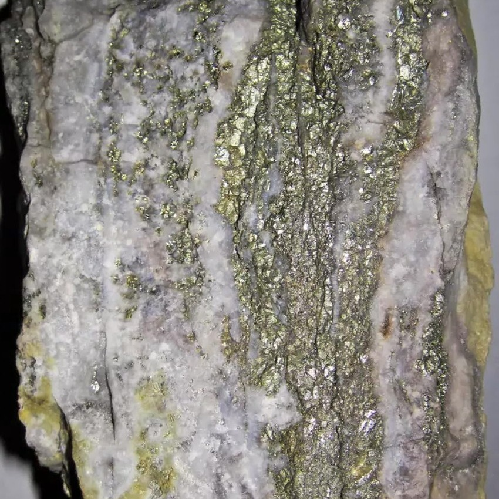
Vein of Hydrothermal Pyrite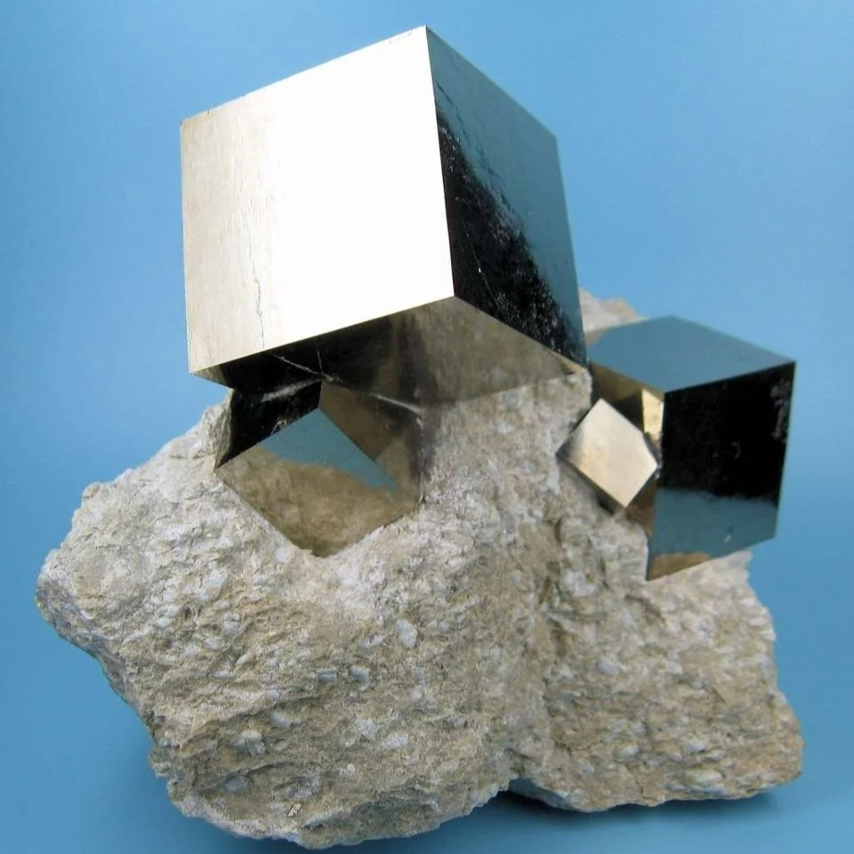
Cubic crystalline form of pyriteThe underlying ionic arrangement of Iron (II) disulfide, is a cubic lattice. As a crystal grows from solution in stable conditions -- such as might occur in the mud of a cave floor, new layers of ions are deposited uniformly on all exposed faces, producing a larger cube. The new layers that are added are cubic shells, gnomons, that build a larger cube from the previous one, preserving the overall cubic shape.
Coming down off the mountain into the wet semi-tropical rain forest you will likely come across an old snag, a dead tree which is still standing and creating a habitat for other organisms. It is quite common to find bracket fungus growing off the side of a snag, or even a live tree that is coming near the end of its life. The fungi are called polypores, and the visible fruiting body that form semicircular horizontal shelves off the side of the trunk are called conks. These are a woody texture, and, like mushrooms, are often brightly colored. Some are prized for their medicinal value, while others are poisonous. Many bracket fungi have pronounce half rings, like the ones in Fig. 6.5, that give visual image of how they grow; by adding a new layer to their outer edge every year. These new layers are shaped that preserve the overall semi-circular shape year after year.
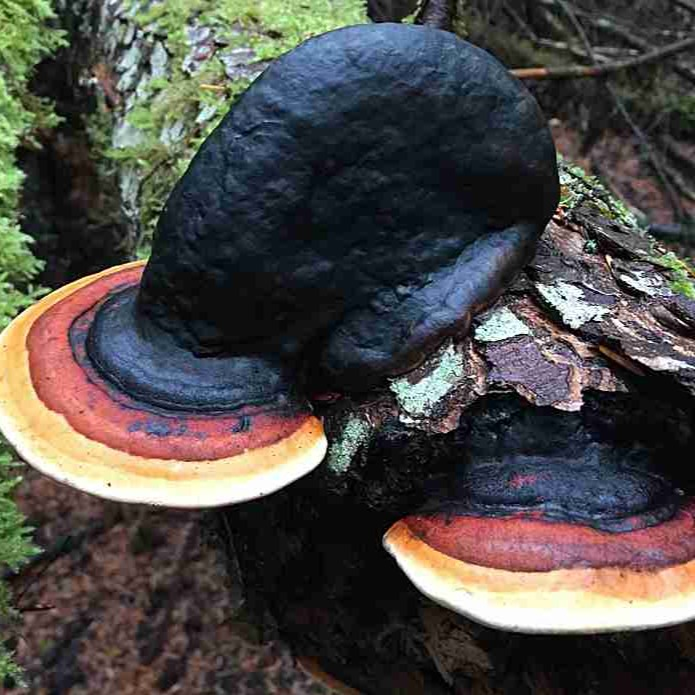
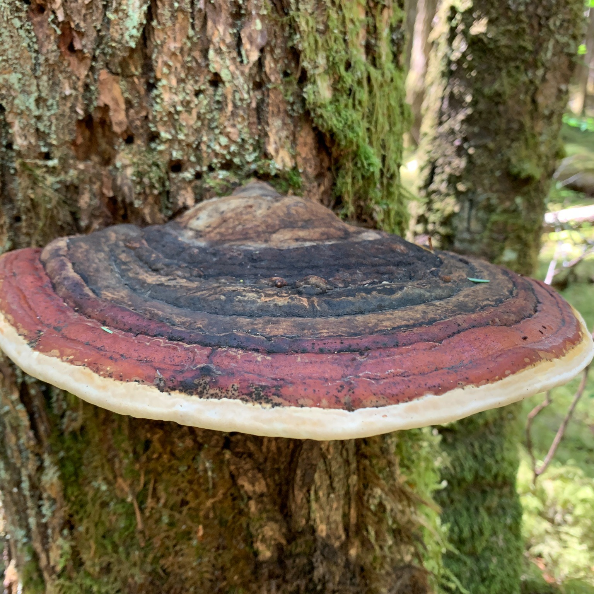
Coming down from the mountains to the coastal waters, we find some of the richest environments for interesting organisms with geometric forms that grow while retaining their shapes. Most common are the mollusks with shells that come in a variety of interesting shapes. The gastropods have the richest set of examples. There is the conical shell of the limpet, that adheres like a vice to the rocks that are exposed at high tide, the spiral shell of the moon snail which inches along the bottom like an alien, and the tiny periwinkles with sharp screw-like shells. Around the world here are hundreds of others with varying shapes and beautiful patterns.
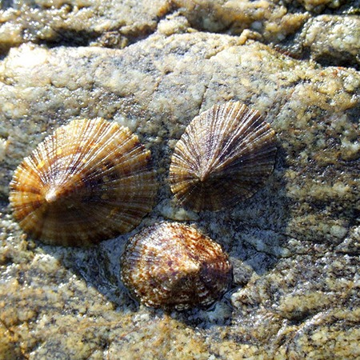
Common limpet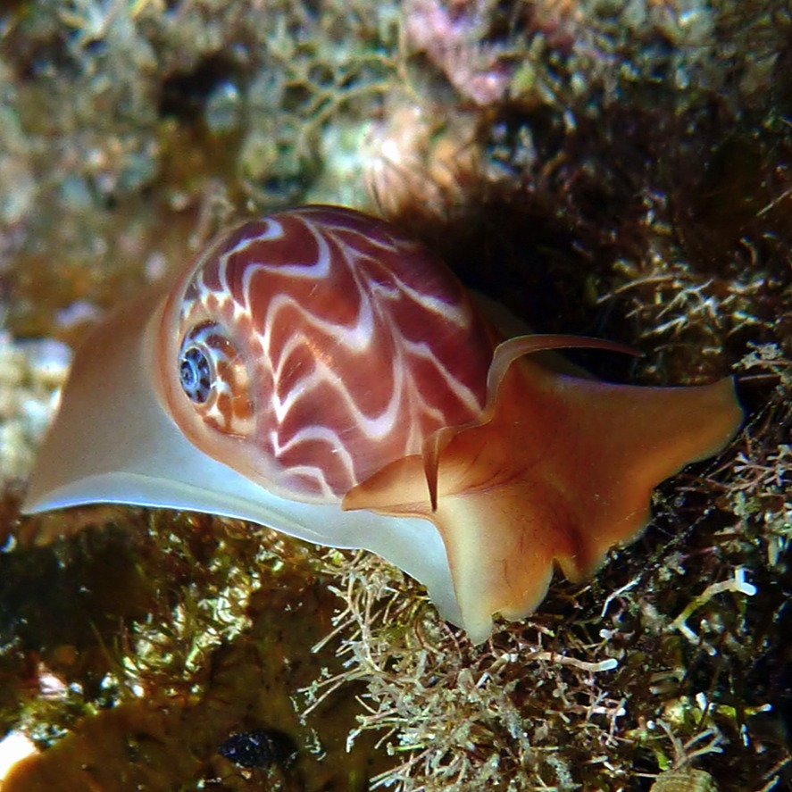
Moon Snail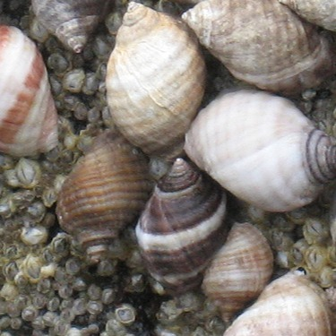
PeriwinkleThere are also the two shelled bivalves, including clams that dig deep into the muddy intertidal seabed, mussels that grasp in clusters to rocks and wood, and scallops that swim through water by clapping their shells together.
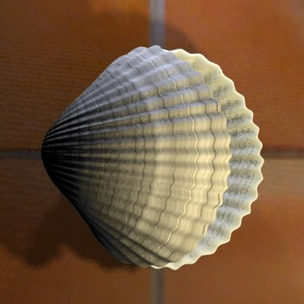
Cockle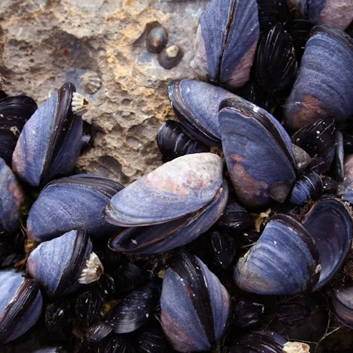
Mussel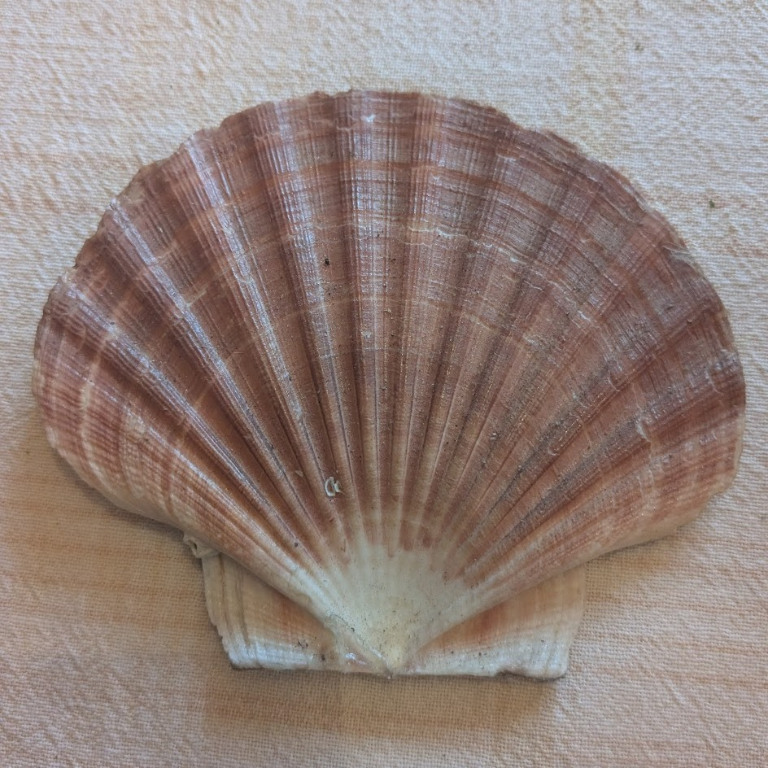
ScallopOne of the most remarkable species of clam, is the geoduck (pronounced "gooey duck"). These amazing creatures can live for over a 100 years, buried in mud. Their siphons used for eating and breathing are the largest of any species -- too large to fit in their shells.
Another remarkable creature is the nautilus, which is a cephalopod in the same class of mollusks as the octopus and squid. Cut a nautilus shell along its plane of symmetry and you see one of the most fascinating geometric records in the natural world. The shell is divided into chambers by curved walls called septa. Each chamber is geometrically similar to the one before it. The nautilus constructs each new chamber as a scaled copy of the previous one. We will see this this particular example illustrate not just geometric similarity but self-similarity, which is concept we will introduce later in this chapter, and will fully explore in the chapter on fractals.
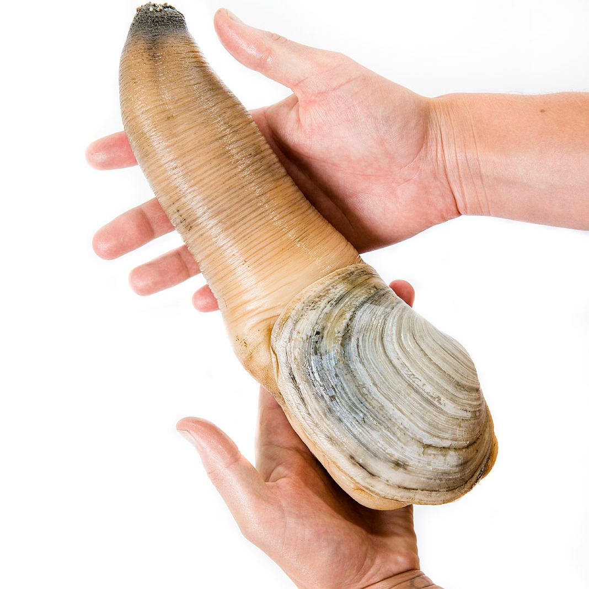
Geoduck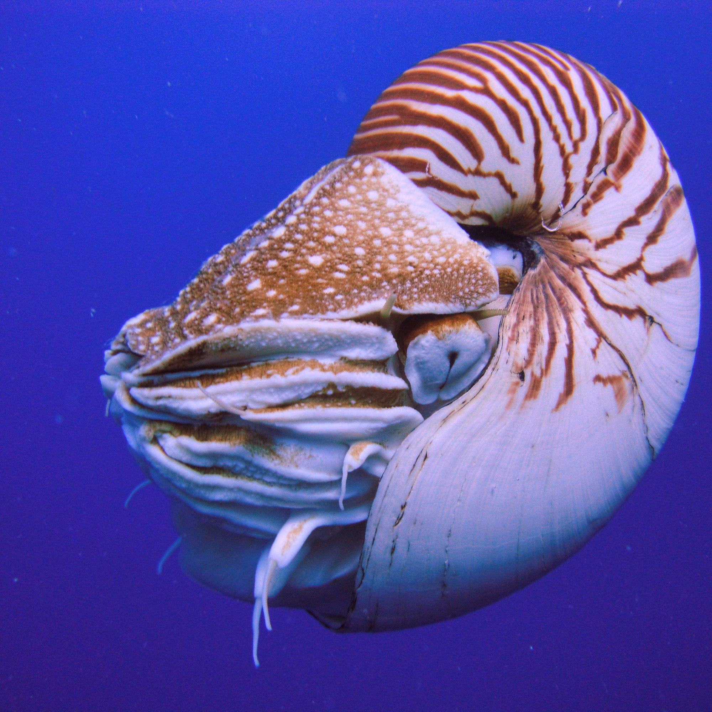
Nautilus Cephalopod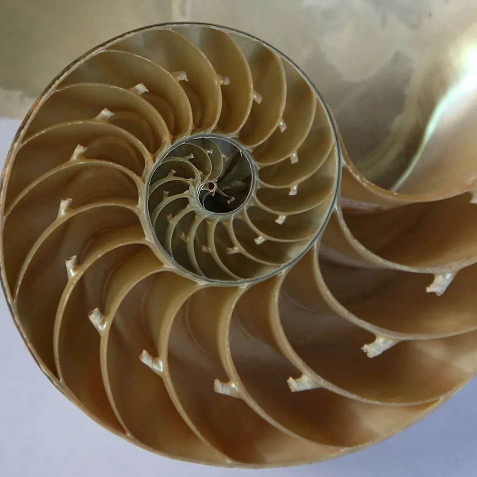
Nautilus shell cross sectionFor most of these mollusks, their shells have particular geometric form -- a cone, a spiral, a fan or a dish, or something else. The shape of each retains its proportions as the organism grows, and the new shell that is added each year, the gnomon, is configured so as to retain this optimal from.
Not all mollusks have the seashells with symmetric and fixed geometric form that replicates as they grow. One pronounced examples, is the oyster, which shapes its shell to fit with and contort with the shape of the crack or cranny on which it grows, while their shells grow by accretion, as with other mollusks shells, the shape may change. However, hidden with the oyster is another beautiful example of gnomonic growth -- that is the oyster pearl. A pearl grows incrementally as the oyster coats an irritating grain in mother of pearl, creating the lustrous sphere that are so treasured by jewelers . Cut a pearl in half and you can see the rings that show the growth.
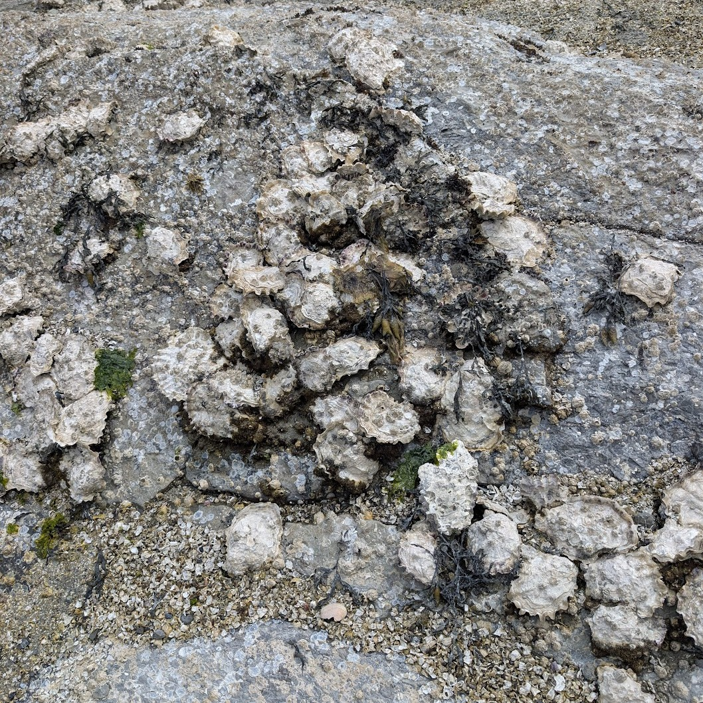
Oyster bed, Galiano Island. Credit Doreen McAvity 2026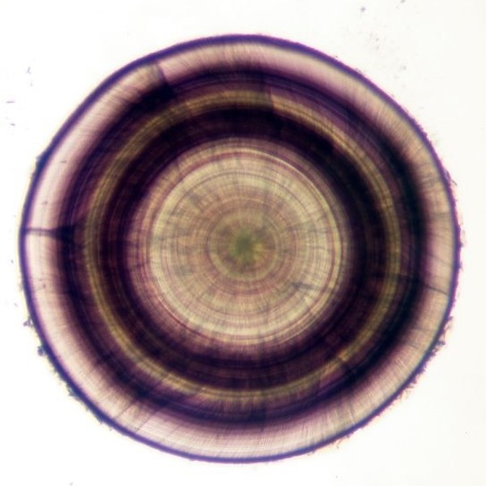
Pearl cross sectionThe natural examples in Section 1 all illustrate the idea of isometric growth of a form through the addition of another shape, in order to create a larger but geometrically similar figure. The shape that is added is called a gnomon. In this section we work through the conditions a shape must satisfy to have a gnomon and what form the gnomon can take depending on the original shape.
The word gnomon comes from the Greek for "that which knows" it originally refers the upright rod of a sundial. In Greek geometry it acquired a more specific meaning: the gnomon of a figure is the shape that, when added to it, produces a larger figure similar to the original.
More precisely: a gnomon to a figure $F$ is a shape $G$ such that the union of the two shape $F \cup G$ is geometrically similar to $F$ . That is, it has the same shape, but larger. This definition then asks the question: what is the shape of the gnomon for a particular figure and how does it relate to the original figure.
Our first example is the square, to which an L shape is added to create another square. This is the original gnomon, from ancient Greece, and we can see why the borrowed the name from the sundial.
The next example is a circular disc, for which a suitable gnomon is a ring (or annulus) that surrounds the circle uniformly, creating a larger circle. The thickness of the ring, is not prescribed, but the inner radius of the ring much much match the radius of the circular disc for which it is a gnomon.
A shape need not have a unique gnomon. Different gnomons may produce similar figures at different scales. An L shaped gnomon which is thicker would still produce a square -- but one at a larger scale. It is also possible to find differently shaped gnomons for a shape that grows that shape at the same scale in non-congruent ways. Here are a few examples
The square. We saw above the square can have an L-shaped gnomon, which represents growth along two of four sides. What if growth happens uniformly on all sides? Then the gnomon would be a square annulus as shown below.
Could a square have a gnomon that represents growth on one side only? On three sides? We'll leave those questions for Section 4.
The L-tetromino. Consider the L-shaped tetromino — four unit squares arranged in an L. Scaled up by a factor of two, it has 16 unit squares. By placing the original L in two different orientations within the 2× L, we obtain two connected 12-square gnomons with entirely different shapes.
From the perspective of a growing object, the above examples of gnomon represent non-uniform growth along four of the sides, resulting in a shape that is isometric to the original. Non-uniform growth is not unusual, necessarily, but in a biological or physical context it requires some explanation. Does this L shape have a gnomon with uniform growth on one or more sides? We'll explore the answer in the exercises.
Not every shape has a connected gnomon. Let's consider two types of situation that arise.
Holes:
Consider an annulus — a ring, like a washer, with inner radius $1$ and outer radius $a$ (so the aspect ratio of the annulus is $a$). Can we add some shape to an annulus to obtain a larger, similar annulus? A similar annulus scaled by $k$ would need inner radius $k$ and outer radius $ka$. We can add an outer ring (from $a$ to $ka$), but we a gnomon cannot simultaneously remove the inner zone (from $1$ to $k$) that the new hole requires. The annulus has no gnomon.
This failure is informative. It tells us that gnomonic growth is not universal. It requires a special relationship between a shape and its increments. The shapes that have gnomons are special, and understanding what makes them special is mathematically interesting.
Corner-touch connections.
Even a shape without holes may fail to have a connected gnomon, for example if it is itself only corner-connected. Consider two unit squares that share a single corner point (not an edge).
The gnomon required for a 2× scaling (red) splits into two separate L-tromino pieces, with three squares around each original square on the sides away from the shared corner. The gnomon is disconnected. The underlying reason is topological: the original shape is not edge-connected (the two squares share only a point), so the gnomon needed to bridge two separate parts of the figure cannot itself be connected.
Rectangles provide a rich and instructive family of gnomon problems. Let's explore a few of them here.
To start with a concrete example, take a rectangle of width $2$ and height $1$, which we call the 2:1 rectangle. What shaped gnomons can it have?
Suppose the gnomon adds an L shape, with strip of width $a$ along the right side and a strip of height $b$ along the top. The new rectangle has width $2+a$ and height $1+b$.
For the new rectangle to be similar to the original (both have ratio $2:1$), we need: $$\frac{2+a}{1+b} = \frac{2}{1} = 2$$
Expanding: $$2 + a = 2(1+b) = 2 + 2b\; ,$$ so the constraint is simply $a = 2b$.
As with the square, the L-shaped gnomon of a 2:1 rectangle is not unique — there is an infinite family of them, all satisfying $a = 2b$. Some examples are in the table below.
| $b$ | $a = 2b$ | New rectangle | Scale factor $k$ |
|---|---|---|---|
| $\frac{1}{2}$ | $1$ | $3 \times \frac{3}{2}$ | $\frac{3}{2}$ |
| $1$ | $2$ | $4 \times 2$ | $2$ |
| $2$ | $4$ | $6 \times 3$ | $3$ |
Now suppose the gnomon is a plain rectangle added to just one side. To see the shape of the gnomon clearly, let's stand the 2:1 rectangle on its end (portrait) and add the gnomon to the right side (increasing the width by $g$), making a rectangle in landscape orientation with length $1+g$ and height $2$.
For the new $(1+g) \times 2$ rectangle to be similar to the original $(1 \times 2)$, we need their aspect ratios to match. The original has length to width ratio $2:1$. The new rectangle should have the same ratio, so $(1+g)/2 = 2$.
Solving: $1+g = 4$, so $\boxed{g = 3}$. The gnomon must be a $3 \times 2$ rectangle — a specific, unique shape. There is exactly one one-sided rectangular gnomon for the 2:1 rectangle.
Notice that the rectangular gnomon is not itself a 2:1 rectangle. The new combined shape, a ($2 \times 4$) rectangle is similar to the original as required, scaled by factor 2 and rotated $90°$.
We just saw that the one-sided gnomon of a 2:1 rectangle is a 3:2 rectangle — a rectangle with different proportions. Is there a rectangle whose one-sided gnomon is a copy of itself? That is: can we find an aspect ratio $r$ such that placing two identical copies of a $1 \times r$ rectangle side by side gives a larger, similar $1 \times r$ rectangle as shown in the figure below:
The condition for a geometrically similar shape: $$\frac{r}{1} = \frac{2}{r} \implies r^2 = 2 \implies r = \sqrt{2} \approx 1.414$$
This is sometimes referred to as the the silver ratio, $\delta = \sqrt{2}$.
So, a $1\times\sqrt{2}$ rectangle in orientation placed beside an identical copy makes a new rectangle geometrically similar to the original, larger by factor $\sqrt{2}$ and rotated. This ratio it the basis of the ISO paper size system. A4 paper is $210 \times 297$ mm; the ratio is $297/210 = \sqrt{2}$ to three significant figures. Folding an A4 sheet in half produces an A5 sheet, also a $\sqrt{2}$ rectangle. Placing two A4 sheets side by side makes an A3 sheet — the same ratio and twice as large.
What is the rectangle such that adding a square to one side produces a larger, similar rectangle? To see, let the rectangle have short side $1$ and long side $a$ ($a > 1$). We add a square of side $a$ to the long side.
The combined rectangle has length $(1+a)$ and width $a$. For this rectangle to be similar to the original of length $a$ and width $1$ we need: $$\frac{1+a}{a} = \frac{a}{1} \implies a^2 = a + 1 \implies a = \frac{1+\sqrt{5}}{2} $$
This is the unique aspect ratio for which a rectangle has a square as its gnomon. We met this number before in Chapter 1 as the limit of ratios of consecutive Fibonacci numbers. It is the golden ratio $\varphi \approx 1.618$. The rectangle is known as the the golden rectangle.
There is a unique aspect ratio for which a rectangle has a square as its gnomon: the golden ratio $\varphi = (1+\sqrt{5})/2 \approx 1.618$. This rectangle, the golden rectangle, is the only rectangle that is similar to itself after a square is added to its long side (or removed from its shorter side). The defining property of $\varphi$ is:
$$\varphi^2 = \varphi + 1$$
Lets now iterate the growth of the a golden rectangle, starting with a $1 \times \varphi$ rectangle and adding squares repeatedly, as shown in the diagram below:
Denote the side-lengths of successive squares as $\ell_1, \ell_2, \ell_3, \ldots$, with $\ell_1 = 1$ and $\ell_2 = \varphi$. At each step the new square has side equal to the long side of the current rectangle. As a result the long side of the new rectangle is the sum of the two previous sides. By construction this sequence satisfies: $$\ell_n = \ell_{n-1} + \ell_{n-2}$$
This is exactly the Fibonacci recurrence relation but with initial values 1 and $\varphi$ rather than starting with $1$ and $1$ in the case of the Fibonacci sequence. Writing each term out explicitly, the sequence begins: $$1,\quad \varphi,\quad 1+\varphi,\quad 1+2\varphi,\quad 2+3\varphi,\quad 3+5\varphi,\quad 5+8\varphi, \quad \cdots$$
We recognize the Fibonacci numbers are the coefficients of $\varphi$ in each term. We can express each term as$$\ell_n = F_{n-2} + F_{n-1}\,\varphi$$
where we extend the Fibonacci sequence to include $F_0 = 0$ and $F_{-1} = 1\, .$ It is curious fact that the gnomonic growth of golden rectangle encodes the Fibonacci sequence in its side-lengths.
Here is another interesting observation; this sequence is actually a geometric sequence in disguise. Here is why. Using the defining relation for $\varphi$ is: $$\varphi^2=1+\varphi\,,$$we see the third term, which is $1+\varphi$, is equal to $\phi^2$. The next term is $1+\varphi+ \varphi$ which is $\varphi^2+\varphi$. Factoring, this is and then using the relation again, $\varphi(\varphi+1)=\varphi(\varphi^2)=\varphi^3$. We leave it as an exercise to generalize. In general the $n$th side has length $\ell_n=\varphi^{n-1}$. This is a geometric sequence with growth factor $\varphi$. The table below give the first 6 terms in these different forms:
| $n$ | $\ell_n$ (linear form) | $= \varphi^{n-1}$ | Approx. |
|---|---|---|---|
| 1 | $1$ | $\varphi^0$ | 1.000 |
| 2 | $\varphi$ | $\varphi^1$ | 1.618 |
| 3 | $1+\varphi$ | $\varphi^2$ | 2.618 |
| 4 | $1+2\varphi$ | $\varphi^3$ | 4.236 |
| 5 | $2+3\varphi$ | $\varphi^4$ | 6.854 |
| 6 | $3+5\varphi$ | $\varphi^5$ | 11.09 |
When a gnomon is added to its corresponding shape the result is by construction geometrically similar to the original. That is, it has the same proportions but larger. A self-similar object is one that looks the same at every scale. That is, it contains a perfect copy of itself when you zoom in or out. The repeated addition of gnomons for the golden rectangle above creates an object that is self similar provided the process is repeated forever and, the original seed golden rectangle is also further subdivided into smaller and smaller squares indefinitely. The diagram below illustrates this idea. In addition arcs of circles have been drawn across the diagonal of each square, creating a spiral. This a close approximation of the golden spiral, which we will learn more about in the next chapter.
While there are objects in nature that are approximately self-similar due to a repeated iteration of some scaling growth law, but in practice the process breaks down at larger and smaller scales. However, it instructive to look at a few more examples of self-similar gnomonic growth.
Lets see how we can construct a self-similar object through gnomonic addition of triangles. First begin with a small equilateral triangle $T_1$. Attach a new equilateral triangle $T_2$ to the right side of $T_1$, with $T_2$ rotated 60° and scaled up by a certain factor and with the outer vertices aligned. We will choose the growth factor suchlike that after six triangles are added, with six rotations of 60° (one full turn), the arrangement closes in on itself (Fig. 6.20). It turns out this factor is $k\approx 1.3247$, also known as the plastic number. You are invited to find out more about this number in Section 3.
This construction creates a shape that is a scaled copy of the space the triangles enclose, as shown in Fig. 6.20. Imagine making a copy of this shape, shrinking it down and filling in the gap. Then repeat this process. The result is a self-similar object. Now, when we add additional triangles, the result is the same shape, but rotated 90. The equilateral triangle is a gnomon for this self similar object. If we add arcs through the outer vertices of each triangle, we get a similar looking spiral to the golden spiral from Section 2.3. The two are both in the same class of spirals (logarithmic spirals), but differ in a particular way that we will learn about in the next chapter. It turns out its is this spiral, and not the golden spiral, that most closely corresponds the the Nautilus spiral we introduced in section 1.
A tree's cross-section with constant-width rings is not self-similar, even though the tree retains a circular shape as each ring gnomon is added. If the rings are of constant width, then when we zoom in the rings look thicker, and when we zoom out they look thinner. For genuine self-similarity, ring widths must scale the thickness of the added rings with radius. The larger the radius the larger the ring. It turns out the only ring patterns with this property have radii forming a geometric sequence.
A set of concentric rings is self-similar if and only if its radii form a geometric sequence: $$r_n = r_0 \cdot q^n \qquad (q > 1)\, ,$$ for some factor $q$.
The ring widths $$w_n = r_n-r_{n-1} = r_0 q^n- r_0q^{n-1} =r_0q^{n-1}(q-1)=r_{n-1}(q-1)$$ are then proportional to $r_{n-1}$: each ring is wider in the same proportion as its radius is larger. If you zoom by factor $q$, each ring $n$ maps to ring $n+1$, so the patterns looks identical.
Biological consequence. Real tree rings are approximately constant width since the tree lays down roughly the same thickness of wood each year. This is not self-similar growth. A self-similar ring pattern requires proportionally more wood as the tree grows larger. Some organisms, such as the nautilus, do grow this way, with each new chamber a fixed fraction larger than the previous. It is not clear if there is an organism or object with circular symmetry that grows in a self-similar way.
The following topics extend the gnomon idea in several directions — into number theory, geometry, and the mathematics of spirals and $\varphi$. Each can be read independently of the others.
The word gnomon appears in Euclid's Elements (Book II) and was used by Hero of Alexandria and the Pythagoreans. For the Pythagoreans, the key observation was geometric: adding the L-shaped gnomon (an odd number) to a square number produced the next square. The $n$-th triangular number $T_n = n(n+1)/2$ satisfies $T_n + T_{n-1} = n^2$, so triangular numbers are the "staircase" gnomons of triangular arrays. [To be expanded.]
Project A. Read Book II, Proposition 1 of Euclid's Elements (aleph0.clarku.edu/~djoyce/elements/). Translate the geometric statement into modern algebra and verify with a specific numerical example.
Project B. Show that diagonal sums of Pascal's triangle give the triangular numbers, and that each triangular number is a gnomon to the previous one.
Project C. What is the gnomon to a tetrahedron of $T_n^{(3)} = n(n+1)(n+2)/6$ dots? (See Problem 2.1 in Section 4.)
We in Section 2.1 we introduced the L shaped gnomon for a square, the shape that gave the gnomon its name. In this section we look at the analogous type of gnomon in three dimensions for a cube, such as might apply for a halite or pyrite crystals, however, occupy three What shape is the gnomon of a cube, and what numbers does it count? Once we see the answer, we can extend what we learn to four, five, or a hundred dimensions.
A cube of side $n$ units contains $n^3$ unit cubes. Adding one more layer in every direction produces a cube of side $n+1$ with $(n+1)^3$ unit cubes. The gnomon contains $$G_n = (n+1)^3 - n^3 = 3n^2 + 3n + 1$$ unit cubes. For $n = 2$ that is $G_2 = 3(4) + 3(2) + 1 = 19$, as shown in the diagram below.
Unlike the 2D gnomon — a single L-shaped bar — the cubic gnomon decomposes into three types of piece. Three face-slabs of size $n \times n \times 1$ cover the three open faces of the inner cube, contributing $3n^2$ unit cubes. Three edge-rods of size $1 \times 1 \times n$ fill the exposed edges where adjacent slabs would meet, contributing $3n$. One corner cube completes the assembly, contributing 1. The three-part structure mirrors the three types of boundary in three dimensions — faces, edges, and vertices — and is the direct 3D analogue of the 2D decomposition into two bars and one corner.
The sequence gnomons $G_0, G_1, G_2, \ldots = 1, 7, 19, 37, 61, 91, \ldots$ also turns out to be the sequence of centered hexagonal numbers, that we encountered in chapter 1. Each term counts the dots in a planar hexagonal arrangement: one central dot surrounded by concentric hexagonal rings of 6, 12, 18, ... dots, so the total through ring $n$ is $1 + 6(1 + 2 + \cdots + n) = 3n^2 + 3n + 1$. It is curious that a 3D corner frame and a 2D hexagonal layer produce the same sequence, which is a hint a the deeper relationship between cubic lattice packing and hexagonal layering that crystallographers exploit daily.
By geometric construction the cubic gnomons sum to a perfect cube, just as the 2D gnomons (odd numbers) sum to a perfect square:
You are invited to prove this algebraically in the project section.
The gnomon generalizes cleanly to any number of dimensions. In $d$ dimensions, a hypercube of side $n$ contains $n^d$ unit cells. Its gnomon — the shell added to create a cube with side length $n + 1$ — has size
Expanding by the binomial theorem, this is exactly the sum of all lower-order terms in $(n+1)^d$:
The table below records the gnomon formula and first few values for $d = 1$ through $5$.
| $d$ | Object | Gnomon formula $G_n^{(d)}$ | $G_1$ | $G_2$ | $G_3$ |
|---|---|---|---|---|---|
| 1 | Segment | $1$ | 1 | 1 | 1 |
| 2 | Square | $2n + 1$ | 3 | 5 | 7 |
| 3 | Cube | $3n^2 + 3n + 1$ | 7 | 19 | 37 |
| 4 | Tesseract | $4n^3 + 6n^2 + 4n + 1$ | 15 | 65 | 175 |
| 5 | 5-cube | $5n^4 + 10n^3 + 10n^2 + 5n + 1$ | 31 | 211 | 781 |
Three observations stand out. First, the leading term of $G_n^{(d)}$ is always $d \cdot n^{d-1}\;,$ which is half as large as the formula for the $(d-1)$-dimensional surface area of a $d$-dimensional hypercube of side $n$. This term also previews the calculus fact that $\tfrac{d}{dn}(n^d) = d\,n^{d-1}$. The gnomon, which measures discrete growth by one unit, approximates the differential in the limit of small steps.
Second, the coefficients in each row are precisely the binomial coefficients $\binom{d}{1}, \binom{d}{2}, \ldots, \binom{d}{d}$, which are the entries of row $d$ in Pascal's triangle. The entire table is encoded in this famous triangle of numbers.
Third, summing all gnomons from $G_0^{(d)}$ to $G_{n-1}^{(d)}$ telescopes perfectly — each term $(j+1)^d - j^d$ cancels its neighbor — leaving $n^d$. Every perfect $d$th power is the sum of $n$ successive gnomonic shells.
The gnomon of the $d$-dimensional hypercube of side $n$ is
Summing the first $n$ gnomons recovers the $d$-th power:
The leading term $d\,n^{d-1}$ equals half the $(d-1)$-dimensional surface area of the hypercube, and the coefficients are the binomial coefficients of row $d$.
Confirm the three-part decomposition of the cubic gnomon, and extend the sum identity.
Explore the dimensional pattern from Key Result 3.2.
The ratio $R(n,d) = G_n^{(d)}/n^d$ is the the gnomon shell to the interior cube it wraps. Investigate how this ratio behaves as $n$ and $d$ vary.
| $n \backslash d$ | $d=2$ | $d=3$ | $d=4$ | $d=5$ |
|---|---|---|---|---|
| $n=1$ | 3.000 | 7.000 | ||
| $n=2$ | 1.250 | 4.063 | ||
| $n=3$ | 1.370 | 3.214 | ||
| $n=5$ | 0.440 | 1.074 | ||
| $n=10$ | 0.331 | 0.611 |
The gnomonic idea extends beyond hypercubes to simplices (triangles, tetrahedra, and their higher-dimensional counterparts).
In the derivation of the self-similar equilateral triangle spiral of Section 2.4 we introduced the quantity $k \approx 1.3247$ as the growth factor for each gnomon so that the sequence of triangles closes in on itself exactly. In this section we'll derive this result. We'll also explore some of the properties of this special number, known as the plastic number, which has a rich history and surprising connections to number theory and architecture.
Recall the spiral: equilateral triangles $T_1, T_2, T_3, \ldots$ are placed in sequence, each rotated $60°$ from the previous and scaled by a constant factor $k$. Triangle $T_n$ has side length $k^{n-1}$ (taking $T_1$'s side as 1). After six rotations of $60°$ (one full revolution) the arrangement fits together, enclosing a gap whose geometry is the same as the group of triangles. The seventh triangle $T_7$, when place on this figure, must satisfy a specific size condition.
Examining the diagram we see the closure happens only if the side of $T_7$ equals the sum of the sides of $T_2$ and $T_6$:
Substituting $s_n = k^{n-1}$ into equation (3.1):
This is the closure equation for the equilateral triangle spiral. It encodes the geometric condition that the spiral closes after one revolution.
Since $k > 0$, we can divide both sides of $k^6 = k^5 + k$ by $k$:
We now factor the left side. The claim, which you are invited to prove in Project A, is
We now examine each factor in turn.
The quadratic factor $k^2 - k + 1$. Its discriminant is $b^2 - 4ac = 1 - 4 = -3 < 0$. Since the discriminant is negative, this quadratic has no real roots. (Its roots are the complex numbers $\tfrac{1}{2} \pm \tfrac{\sqrt{3}}{2}i$, which lie on the unit circle.)
The cubic factor $k^3 - k - 1$. Setting this to zero:
This has one real root, as we show using Cardono's formula for cubic equations:
Cardono's formula is a formula for cubics, analogous to the quadratic formulas for quadratics. The general ideas to express the cubic in depressed cubic form (no $k^2$ term) to get an equation like $k^3 + pk + q = 0$. Then the solution is: $$ k = \sqrt[3]{-\frac{q}{2} + \sqrt{\frac{q^2}{4} + \frac{p^3}{27}}} + \sqrt[3]{-\frac{q}{2} - \sqrt{\frac{q^2}{4} + \frac{p^3}{27}}}\,.$$ Fortunately, the equation $k^3 - k - 1 = 0$ is already a depressed cubic and Cardano's formula applies directly. With $p = -1$ and $q = -1$ the discriminant is $\frac{q^2}{4}+\frac{p^3}{27} =\frac{1}{4} -\frac{1}{27} = \frac{23}{108} > 0$, confirming one real root. The formula gives:
Unlike the golden ratio's clean form $(1+\sqrt{5})/2$, the plastic number requires nested cube roots. Cubic irrationals are genuinely harder than quadratic ones to work with, but fortunately most of the properties of $p$ can be dervied from the defining property $p^3=p+1$.
The equilateral triangle spiral closes after one revolution if and only if the scaling ratio $k$ satisfies:
$$k^3 = k + 1$$
This cubic has exactly one positive real root, the plastic number:
$$p \;=\; 1.32471795724\ldots$$
The other factor $(k^2 - k + 1)$ of the closure equation contributes no real solutions. The plastic number is thus uniquely determined by the geometry of the equilateral triangle spiral.
The defining equation $p^3 = p + 1$ can be compared directly with the golden ratio's defining equation $\varphi^2 = \varphi + 1$. Both say: raising to a power is the same as shifting by one step in the sequence. Since $p^3 = p + 1$, every power of $p$ can be expressed as a linear combination $ap^2 + bp + c$ with integer coefficients. The pattern that emerges is informative.
| $n$ | $p^n$ | Reduced form (using $p^3 = p+1$) | Value |
|---|---|---|---|
| 0 | $p^0$ | $1$ | 1.0000 |
| 1 | $p^1$ | $p$ | 1.3247 |
| 2 | $p^2$ | $p^2$ | 1.7549 |
| 3 | $p^3$ | $p + 1$ | 2.3247 |
| 4 | $p^4$ | $p^2 + p$ | 3.0796 |
| 5 | $p^5$ | $p^2 + p + 1$ | 4.0796 |
| 6 | $p^6$ | $(p+1)^2 = p^2 + 2p + 1$ | 5.4043 |
The highlighted row $p^6 = (p+1)^2$ is particularly elegant. It follows from $p^3 = p+1$ by squaring both sides: $p^6 = (p+1)^2$. More generally, the coefficients in the expansion of $p^n$ are terms of the Padovan sequence — the integer sequence introduced in the next section.
Each power also satisfies the same recurrence as the original sequence: $p^n = p^{n-2} + p^{n-3}$ for all $n \geq 3$. This is the algebraic signature of the plastic number, just as $\varphi^n = \varphi^{n-1} + \varphi^{n-2}$ is the signature of the golden ratio.
The Padovan sequence is defined by the same recurrence as the plastic number's characteristic equation, but for integers:
| $n$ | 0 | 1 | 2 | 3 | 4 | 5 | 6 | 7 | 8 | 9 | 10 | 11 | 12 | 13 |
|---|---|---|---|---|---|---|---|---|---|---|---|---|---|---|
| $P_n$ | 1 | 1 | 1 | 2 | 2 | 3 | 4 | 5 | 7 | 9 | 12 | 16 | 21 | 28 |
The ratios $P_{n+1}/P_n$ converge to $p$: starting from $n = 5$ the ratios are $$4/3,\; 5/4, \;7/5,\; 9/7,\; 12/9, \;16/12, \;21/16, \;28/21 \approx 1.33$$which slowly converge to $p \approx 1.3247$.
The connection to the triangle spiral is direct: if we label the spiral's side-lengths as $s_n = p^{n-1}$, the Padovan recurrence $P_n = P_{n-2} + P_{n-3}$ matches the geometric relationship for the sides of the corresponding triangles.
The two sequences are natural analogues. Fibonacci satisfies $F_n = F_{n-1} + F_{n-2}$ for which the ratio of successive terms converges to the golden ratio; Padovan satisfies $P_n = P_{n-2} + P_{n-3}$ and the ratio of successive terms converges to the plastic number. The gap in indices (skipping one, skipping two) is the essential difference.
| Golden ratio $\varphi$ | Plastic number $p$ | |
|---|---|---|
| Defining equation | $x^2 = x + 1$ | $x^3 = x + 1$ |
| Value | $1.61803\ldots$ | $1.32471\ldots$ |
| Integer sequence | Fibonacci: $F_{n-1}+F_{n-2}$ | Padovan: $P_{n-2}+P_{n-3}$ |
| Spiral geometry | Golden rectangle | Equilateral triangles |
| Algebraic degree | 2 | 3 |
The plastic number was discovered independently by the French engineer Gérard Cordonnier in 1924 (who called it the nombre radiant, "radiant number") and the Dutch Benedictine monk and architect Dom Hans van der Laan in the late 1920s. Van der Laan's name — "het plastische getal," from the Greek plastikos, relating to forming or shaping — has prevailed. His 1960 book Le nombre plastique presented it as a proportioning system for architecture.
Van der Laan argued that the plastic number was uniquely suited to three-dimensional design, as the golden ratio was to two-dimensional composition. He identified seven "plastic intervals" — seven consecutive powers of $p$ from 1 to $p^6 \approx 5.4$ — arguing that this range corresponds to the span of sizes the human eye can distinguish simultaneously in a single space. His most celebrated building designed on these principles is the Abbey of Saint Benedictusberg at Vaals in the Netherlands (1956–1986), widely admired for its stark geometric purity.
Project A — Closure, the equation, and Cardano's formula.
Verify by hand that
$(k^2 - k + 1)(k^3 - k - 1) = k^5 - k^4 - 1$ by expanding the product term by term. Then confirm that the quadratic $k^2 - k + 1$ has no real roots by computing its discriminant.
For the solution to the cubic equation (3.5) verify Cardon's formula gives$$p \;=\; \sqrt[3]{\tfrac{9+\sqrt{69}}{18}} \;+\; \sqrt[3]{\tfrac{9-\sqrt{69}}{18}}$$Compute each cube root separately and add them — you should get $\approx 1.3247$.
Project B — Exploring properties of $p$.
Without a calculator, derive the reduced forms $p^7$ and $p^8$ by multiplying $p^6 = p^2 + 2p + 1$ by $p$ and using $p^3 = p + 1$ to eliminate any $p^3$ that appears. Verify your answers numerically. What is the pattern of integer coefficients of $1$, $p$, and $p^2$ as $n$ grows?
The Padovan connection. The coefficients of $p^n$ written as $a_n + b_n p + c_n p^2$ are themselves Padovan numbers. Check this for $n = 3, 4, 5, 6, 7$ using your results and the Padovan sequence table.
Self-similarity of $p$. Since $p^3 = p + 1$, the number $p$ satisfies $p = \sqrt[3]{p + 1}$. This means $p$ is a fixed point of the function $f(x) = \sqrt[3]{x+1}$. Start with $x_0 = 1$ and repeatedly apply $x_{n+1} = \sqrt[3]{x_n + 1}$. How quickly does the sequence converge to $p$? Compare to the convergence rate of $P_{n+1}/P_n$.
Project C — Building and exploring the Padovan spiral.
Building the spiral. The Padovan sequence $1, 1, 1, 2, 2, 3, 4, 5, 7, 9, 12, \ldots$ can be drawn as a spiral of equilateral triangles. On triangular graph paper (or plain paper with a 60° set-square), proceed as follows:
Properties to explore. (a) After drawing 6 triangles, you will have completed one full revolution (6 × 60° = 360°). Does $T_7$ fit exactly against the arrangement, or is there a gap? Compare this with the closure condition from the main text. (b) Measure the ratio $P_{n+1}/P_n$ for $n = 3, 4, \ldots, 9$ from your drawing (count grid squares). Does it converge toward $p \approx 1.3247$? (c) In the golden rectangle spiral, the arc in each square is a quarter-circle centered at a corner of the square. Can you draw an analogous arc in each equilateral triangle — say, a 60° arc centered at the vertex opposite the shared edge — to form a smooth spiral curve? Does the resulting curve resemble the logarithmic spiral from Section 2.4?
Project D — Perrin Sequence and primality check. The same recurrence for the Padovan numbers, but with different starting values, generates the Perrin sequence:
The Perrin sequence carries a remarkable arithmetic property: if $n$ is prime, then $n$ divides $A_n$ (or $n\mid A_n$). This makes the Perrin sequence a candidate primality test: if $n$ does not divide $A_n$ (or $n \nmid A_n$), then $n$ is definitely composite. Unfortunately the converse fails — there exist composite $n$ for which $n \mid A_n$ (called Perrin pseudoprimes; the smallest is $271441 = 521^2$). So the Perrin test can certify compositeness but not primality.
For your project compute $A_n$ for $n = 2, 3, 4, \ldots, 20$ using the recurrence $A_n = A_{n-2} + A_{n-3}$ with $A_0 = 3, A_1 = 0, A_2 = 2$. Identify which $n$ are prime and verify that $n \mid A_ n$ for each prime. Find the first composite $n \leq 20$ and verify that $n \nmid A_n$, confirming it is detected as composite.
Every positive integer has a unique representation as a sum of non-consecutive Fibonacci numbers — the Zeckendorf representation. For example: $10 = 8+2$, $12 = 8+3+1$. This is the natural number system for a world governed by $\varphi$, and it connects gnomon geometry to the base-$\varphi$ number system in which $\varphi^2 = \varphi + 1$ gives a positional arithmetic. [To be expanded.]
Project A. Find Zeckendorf representations of 20, 30, 50, 100. Verify that no two consecutive Fibonacci numbers appear in any of them.
Project B. In base $\varphi$, digits are 0 and 1. Show that $100_\varphi = \varphi^2 = \varphi + 1 = 10.01_\varphi$. Express 2, 3, 5 in base $\varphi$.
Project C. Prove the greedy Zeckendorf algorithm always terminates with no two consecutive Fibonacci numbers in the result.
Problems progress from verification to exploration. ✦ marks problems that go beyond the main text.
A tree's heartwood has radius $r_0 = 3$ cm. It grows by adding a ring of width $\delta = 0.8$ cm each year for 12 years.
Model a tetrahedral crystal by stacking atoms in triangular layers. The $n$-th tetrahedral number is $T_n^{(3)} = n(n+1)(n+2)/6$.
An annulus has inner radius $r$ and outer radius $R > r$.
The L-shaped gnomon of a $2 \times 1$ rectangle satisfies $a = 2b$.
A rectangle of aspect ratio $r > 1$ (width $r$, height $1$) has a one-sided rectangular gnomon of height $g$ added to the top.
Let $\ell_1 = 1$, $\ell_2 = \varphi$, and $\ell_n = \ell_{n-1} + \ell_{n-2}$ for $n \geq 3$.
The arc in the $n$-th square (side $\ell_n = \varphi^{n-1}$) is a quarter-circle of radius $\ell_n$.
A cuboid has dimensions $a \times b \times c$. A gnomon is a piece that, added to the cuboid, gives a larger similar cuboid.